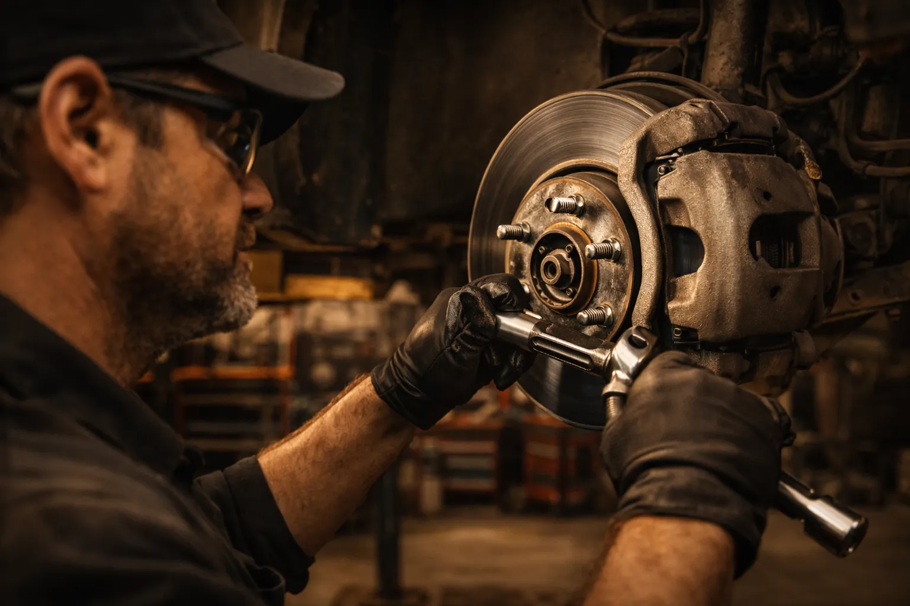
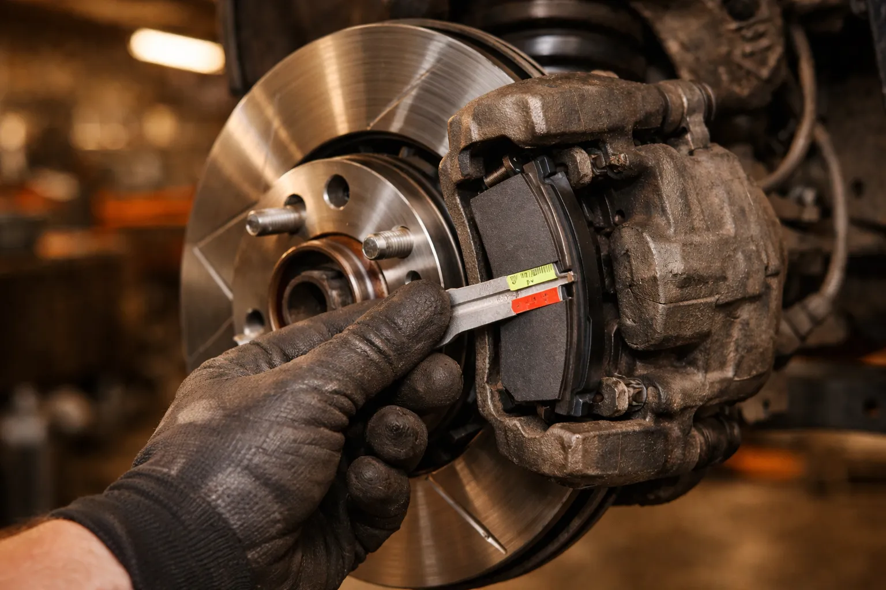
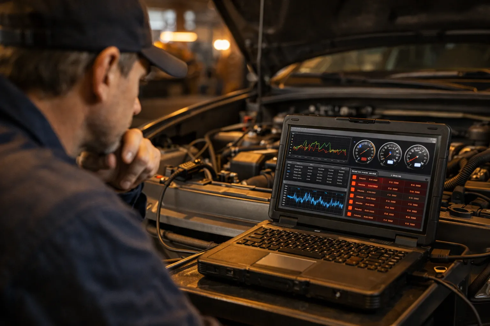
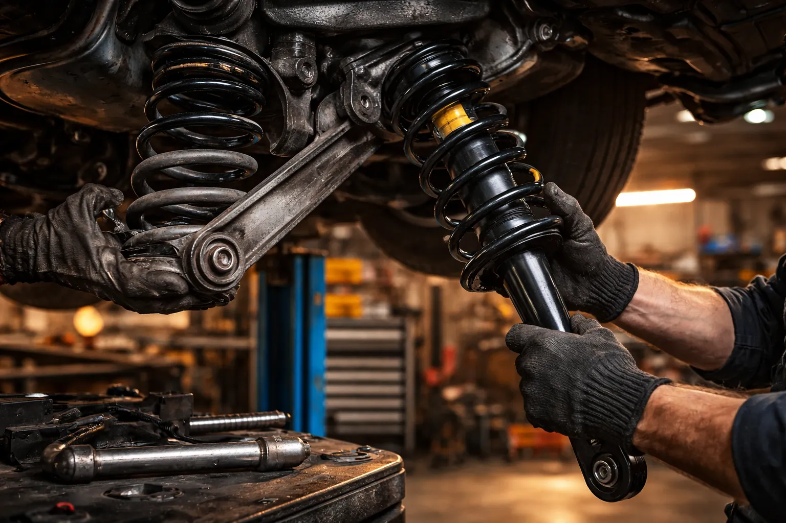
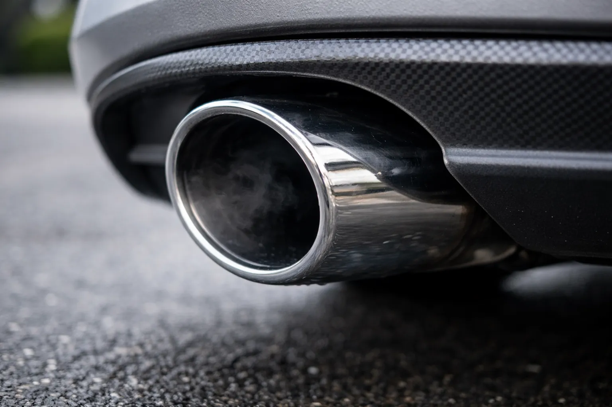

Du diagnostic moteur au remplacement des freins, Ali-Ka assure toutes vos réparations mécaniques avec précision et fiabilité, depuis plus de 22 ans à Etterbeek.
Un système de freinage en parfait état est indispensable à votre sécurité sur les routes bruxelloises. Chez Ali-Ka, nous inspectons et remplaçons les plaquettes, disques et liquide de frein de votre véhicule avec des pièces de qualité. Les arrêts répétés dans le trafic dense autour du Cinquantenaire et les descentes vers la rue de la Loi sollicitent fortement vos freins au quotidien. Que vous circuliez dans les rues d'Etterbeek, à Ixelles ou vers Schaerbeek, notre service freins à Etterbeek vous garantit un freinage réactif et sûr en toutes circonstances. Nous vérifions également l'usure à chaque entretien pour anticiper le remplacement. Intervention rapide, diagnostic précis et tarifs compétitifs.
Détails du service freins
Un voyant moteur allumé sur votre tableau de bord ? Notre atelier Avenue des Casernes dispose d'équipements de diagnostic électronique professionnels pour lire les codes défaut et identifier précisément l'origine du problème. Le diagnostic moteur chez Ali-Ka à Etterbeek permet de détecter les pannes avant qu'elles ne s'aggravent et d'éviter des réparations coûteuses. Un diagnostic préventif est particulièrement recommandé avant les longs trajets sur autoroute ou après un hiver rigoureux. Vous repartez avec un rapport clair détaillant chaque code défaut et la réparation à prévoir. Nous intervenons sur toutes les marques de voitures et utilitaires, pour les automobilistes d'Etterbeek, Woluwe-Saint-Lambert et de tout Bruxelles.
Détails du diagnostic moteur
Une direction qui vibre ou une suspension fatiguée compromettent le confort et la sécurité de conduite. Notre équipe effectue la réparation de direction et suspension à Etterbeek en remplaçant amortisseurs, rotules, biellettes et pièces de train avant ou arrière. Les routes bruxelloises, avec leurs pavés et nids-de-poule, sollicitent particulièrement ces éléments. Les ralentisseurs de la chaussée Saint-Pierre et les passages pavés du quartier des Chasses mettent vos suspensions à rude épreuve saison après saison. Depuis notre atelier proche du Cinquantenaire, nous remettons votre véhicule en état pour une tenue de route impeccable. Un contrôle régulier de la géométrie est également recommandé après le remplacement de ces pièces.
Détails direction & suspension
Un pot d'échappement percé, des bruits anormaux ou une odeur de gaz à l'intérieur du véhicule ? Ali-Ka prend en charge la réparation d'échappement à Etterbeek : remplacement du silencieux, du catalyseur, du flexible ou de la sonde lambda. Un échappement en bon état est aussi indispensable pour passer le contrôle technique et respecter la zone de basses émissions (LEZ) de Bruxelles. Le sel de déneigement utilisé chaque hiver dans la capitale accélère la corrosion des pièces d'échappement, ce qui rend un contrôle annuel vivement conseillé. Les automobilistes d'Etterbeek, d'Ixelles et de Schaerbeek nous font confiance pour un diagnostic rapide et une intervention fiable.
Détails du service échappement
Diagnostic rapide et réparation fiable à Etterbeek. Appelez-nous maintenant.
02 647 47 01